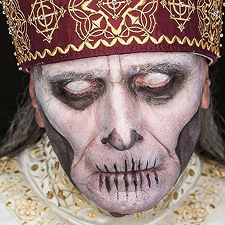
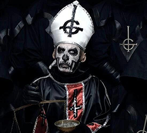
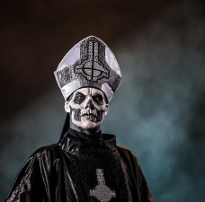
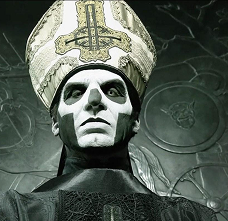
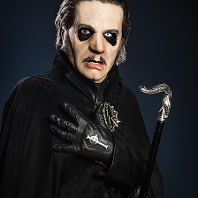
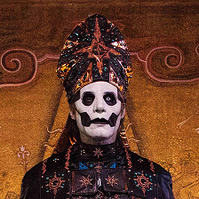
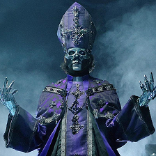

1969 - 2020 (vivo); 2020 - 2022 (fantasma)
Papa Nihil fez sua estreia ao vivo segundos depois que Papa III foi arrastado para fora do palco na Suécia no final de 2017. Aparentemente, seu papel era o de mentor de papas e papais em espera. Papa 0 foi rudemente eliminado ao vivo no palco no México em 2020. Então ressuscitou em 2022 para tocar saxofone, instrumento que já havia tocado no palco.

2010 - 2012
Papa Emeritus I é o papa original na história do Ghost, sendo apresentado no álbum de estreia Opus Eponymous.

2010 - 2012
Para o álbum Infestissumam, Tobias foi Papa Emeritus II, que como o próprio nome revela, não trouxe muita novidade no visual e nem na história do personagem.

2015 - 2017
Supostamente o irmão mais novo de Papa Emeritus II, Papa Emeritus III trouxe uma nova energia para Ghost, tirando suas vestes papais para um visual elegante de terno e botas que veio com uma série de movimentos de palco carregados de sexo. Isso estabeleceu um novo precedente para a dinâmica de como os shows do Ghost normalmente funcionam, por exemplo, a troca de figurino só aumentou. Papa Emeritus III acabou sendo morto sem cerimônia, junto com seus dois predecessores, sua cabeça decapitada aparecendo na capa da Metal Hammer em 2018.

2018 - 2020
Com um visual menos papal, o cardeal Copia trouxe uma pitada de atrevimento à igreja Ghost. Tobias Forge uma vez nos sugeriu que, ao contrário dos vocalistas anteriores do Ghost, Cardi Copia poderia realmente ficar por alguns discos – e ele estava meio certo. Em março de 2020, no palco do México, o Cardeal foi cercado pelo Clero e transformado em Papa Emérito IV.

2020 - 2023
O Cardeal foi atualizado para servir como o quarto Papa Emeritus. Com vestes mais luxuosas, ele aparece como a era mais bombástica e exagerada de Ghost.

2025 - Atual
O atual Papa Emeritus, que assumiu o cargo após a morte de seu irmão, o Papa Emeritus IV/Cardinal Copia. O mais recente vocalista do Ghost, sucedendo Frater Imperator. A sua ascensão ao papado foi anunciada com o lançamento do álbum Skeletá. Papa V Perpétua é o irmão gêmeo de Frater Imperator e filho de Papa Nihil e Sister Imperator.